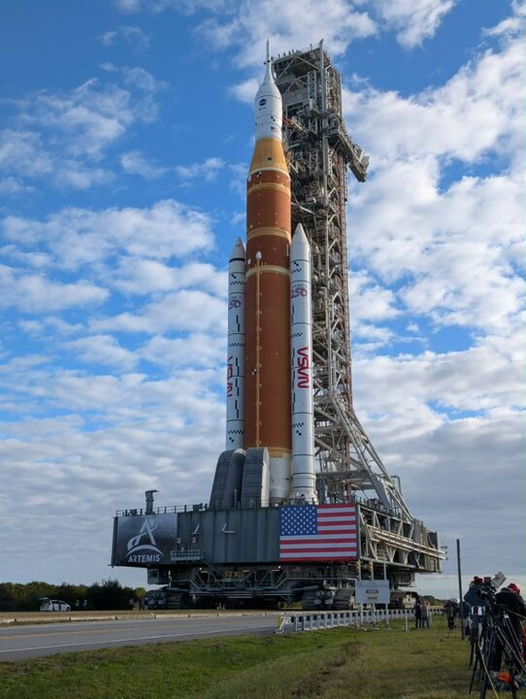
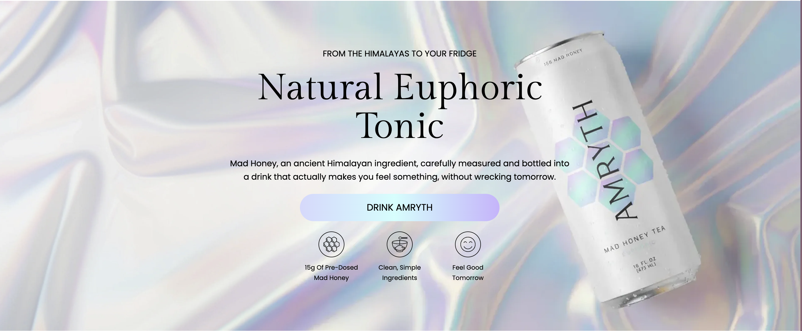
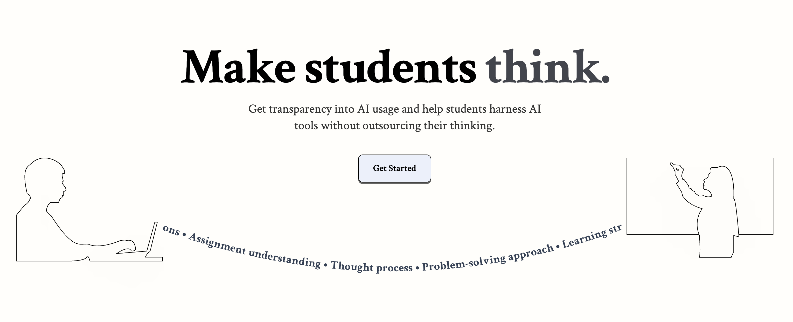
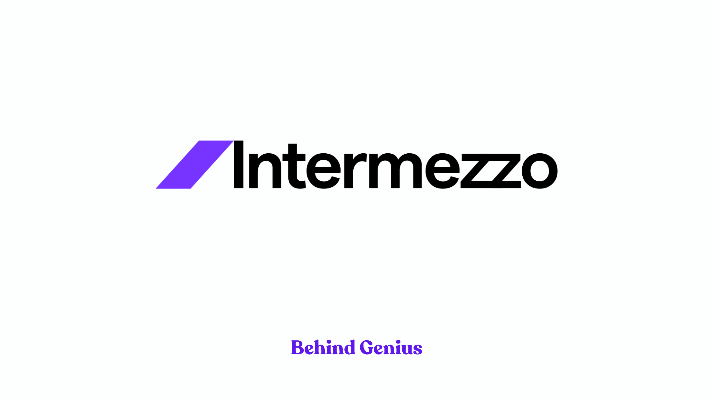
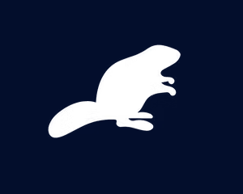
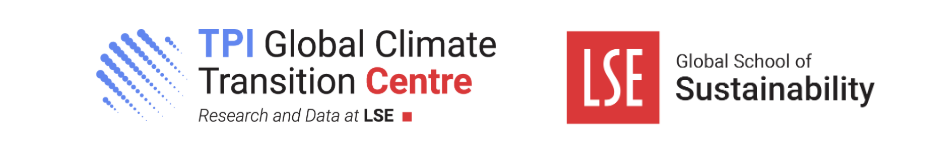

The last few years
Joining as a management consultant focused on digital transformation, Global Capability Centers, talent strategy, and AI adoption for technology clients.

One of only eight university teams worldwide selected to support NASA’s Artemis II mission. Process Doppler tracking data and mission telemetry while developing real-time azimuth and elevation software to track the Orion spacecraft using the university’s satellite dish.


Technical consulting for early-stage startups, focusing on data processing pipelines, Python development, and satellite-related systems.

Fine-tuned large language models to automate tax compliance for Germany, the UK, and Singapore. Achieved 99% accuracy in entity recognition and integrated intelligent compliance rules into the Gross-to-Net API pipeline.

Pro-bono strategy consulting (largest student group affiliated with LSE). Advised clients worldwide on scaling, international expansion, and capital acquisition.
Studied Advanced Data Manipulation, Probability & Inference, Economics in Public Policy, and Data Science for Social Scientists. Co-founded the AI Club and served as Analyst at Castore Consulting.

Co-developed FastAPI application providing programmatic access to climate assessments for 2,000+ companies and 85 sovereign entities, with MCP and RAG features for intelligent querying.
Developed NLP models to assess geopolitical risk from legislative text. Presented findings to NSF and the intelligence community. Runner-up at Tufts research competition.
Graduating May 2026. Double major in Data Science (College of Arts & Sciences) and International Business (Kogod School of Business).